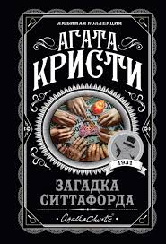
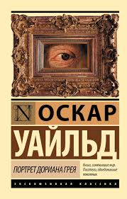
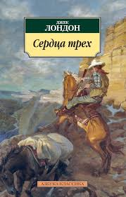
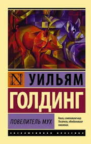
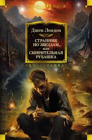
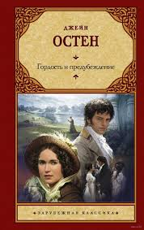
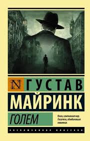

Yoda Books
Корзина
Информация о книге:
Убийства по алфавиту
Жанр: Детективы
Автор: Агата Кристи
Год: 1936
10.50
Портрет Дориана Грея
Жанр: Готика
Автор: Оскар Уайльд
Год: 1890
6.89
Собор Парижской Богоматери
Жанр: Готика
Автор: Виктор Гюго
Год: 1831
23.49
Сердца трёх
Жанр: Приключение
Автор: Джек Лондон
Год: 1916
23.49
Повелитель мух
Жанр: Аллегория
Автор: Уильям Голдинг
Год: 1954
23.49
О дивный новый мир
Жанр: фантастика
Автор: Олдос Хаксли
Год: 1932
11.82
Смирительная рубашка
Жанр: фантастика
Автор: Джек Лондон
Год: 1915
23.49
Гордость и предубеждение
Жанр: Роман
Автор: Джейн Остен
Год: 1813
15.49
Голем
Жанр: Роман
Автор: Густав Майнрик
Год: 1920
30.39